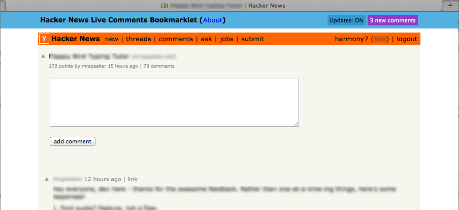

Author: Katsuyuki Ohmuro harmony7@pex2.jp
Hacker News is a great source of information, but one of its problems is its static nature. Here's a bookmarklet that lets you see newly posted comments on Hacker News without having to refresh the page. It uses HNStream (made by Justin of Fanout.io) to obtain the live data, and it fiddles with the page DOM to display new comments in a way that very closely matches HN's look.
To use it, drag the following link into your bookmarks toolbar:
For example:
Then whenever you've got an HN comment thread open, activate the bookmarklet and enjoy live comments. You'll be notified by a flashing button at the top-right corner of your browser window, as well as a number that appears in the browser tab title.

Now you can leave HN pages open and easily see when new comments are posted, without having to refresh constantly.
Please note that HNStream tends to run about 1-2 minutes behind, which Justin says is due to access limitations of Hacker News itself. This doesn't impact the user experience too much, but it's worth knowing about in case you wonder why you don't instantly see your own posts. Fortunately if HNStream manages to reduce its latency someday, it will automatically be reflected in the bookmarklet.
The project is on Github. Please report any bugs using the issue tracker there.
© Copyright Katsuyuki Ohmuro 2014